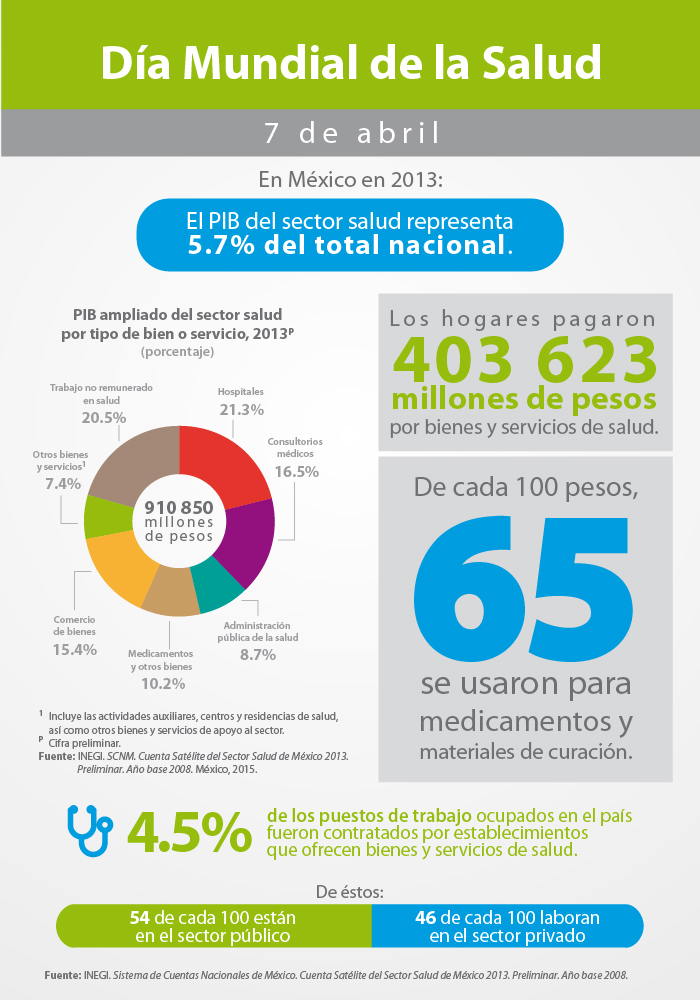

Día Mundial de la Salud
Infografía



 2
2 7
7 8
8
El Día Mundial de la Salud se celebra el 7 de abril de cada año en conmemoración del aniversario de la fundación de la Organización Mundial de la Salud (OMS) en 1948. Todos los años se elige para esa jornada un tema de salud específico a fin de destacar un área prioritaria de interés para la OMS.Ello significa garantizar que todas las personas, en cualquier lugar, puedan tener acceso a servicios de salud esenciales y de calidad sin tener que pasar apuros economicos.
Conoce mas sobre el dia mundial de la salud
El Día Mundial de la Salud es una campaña mundial en la que se invita a todas las personas a prestar una atención especial a un problema de salud con repercusiones en todo el planeta. Las campañas mundiales de salud pública son una gran oportunidad para aumentar la concienciación y los conocimientos sobre los problemas de salud y para movilizar apoyos en todos los ámbitos, desde el local hasta el internacional.

Por lo tanto, la Salud para todos ha sido la vision que nos ha guiado a lo largo de mas de siete decenios. Tambien es el motor de la actual iniciativa impulsada a nivel de toda la Organizacion de ayudar a los paises a avanzar hacia la cobertura sanitaria universal(CSU) La OMS presta especial atención a la lucha contra los problemas sanitarios más importantes, sobre todo en los países en desarrollo y en contextos de crisis.Juntos nos esforzamos por luchar contra las enfermedades, ya sean infecciosas, como la gripe y la infeccion por el VIH, o no transmisibles, como el cancer y las cardiopatias. Ayudamos a que las madres y los ninos sobrevivan y avancen en la vida para que puedan conservar la salud hasta una edad avanzada. Velamos por la salubridad del aire que respiran las personas, de los alimentos que comen y del agua que beben, asi como de los medicamentos y las vacunas que necesitan.
La cobertura sanitaria universal (CSU) implica que todas las personas y comunidades reciban los servicios de salud que necesitan sin tener que pasar penurias financieras para pagarlos. Abarca toda la gama de servicios de salud esenciales de calidad, desde la promoción de la salud hasta la prevención, el tratamiento, la rehabilitación y los cuidados paliativos. La CSU permite a todos acceder a servicios que atienden las causas más importantes de las enfermedades y la muerte, y asegura que la calidad de esos servicios sea suficientemente buena para mejorar la salud de las personas que los reciben.
La CSU no implica la cobertura gratuita de todas las intervenciones sanitarias posibles, independientemente de su costo, ya que ningun pais puede permitirse ofrecer todos los servicios gratuitamente de forma sostenible.
La CSU no se refiere unicamente a la financiacion de la salud: abarca todos los componentes del sistema de salud, a saber, los sistemas de prestacion de servicios de salud, el personal sanitario, las instalaciones sanitarias o las redes de comunicacion, las tecnologias sanitarias, los sistemas de informacion, los mecanismos de garantiza de la calidad, la gobernanza y la legislacion.